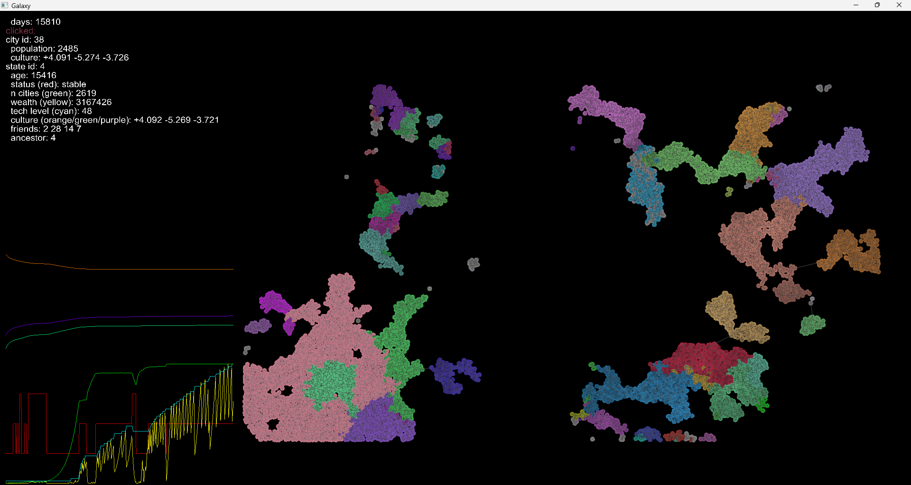

Galaxy开发记录与心得 - Galaxy Development Log and Reflections
我是steam上的Galimulator的重度玩家。但是它bug很多，更新又太慢。于是我打算自己写一个。
考虑到游戏运行时需要大量的计算，但没有复杂的显示内容，我打算使用c++，配合轻量级的游戏库SFML，来实现。游戏的名字暂定为Galaxy。
I'm a hardcore player of a game on Steam named Galimulator. But the game is riddled with bugs and updates are far too slow. So I decided to create my own version.
Since the game demands heavy computation but doesn’t rely on complex visuals, I’ve chosen to develop it in C++ with the lightweight SFML library. It's tentatively named Galaxy.
设计思路 - Design Concept
Galimulator是一个在星系中模拟国家的游戏。玩家可以创建一个星系，星系中会自然诞生很多国家。国家之间会发生战争，和平等行为。国家的状态会发生变化。玩家不需要特地做什么，以“看海”为主。
在此基础上，Galaxy将基本保留Galimulator的玩法（即放置），删去一些不好复刻的功能，加入一些新的元素，比如文化系统，以及动态修路。
这里吐个槽：Galimulater的统计系统做的真不行，本来玩家就几乎什么都不能做，又几乎什么数据都不能看，那还有什么玩头了？
Galimulator is a simulation game for empires within a galaxy. Players generate a galaxy, and over time, nations form naturally, waging wars, making peace, and evolving. The gameplay is largely passive—more about watching the world unfold than actively participating.
So, my Galaxy will retain this core gameplay loop—essentially idle simulation—while removing some of the features that are hard to replicate. In their place, I’m adding new systems, such as culture mechanics and dynamic road building.
Side note: Galimulator's stats system is awful. Players can’t really do much, and there’s hardly any data to analyze. So what’s the point of playing?
综上，Galaxy需要的功能有：
- 生成地图
- 依据地图生成城市
- 城市之间需要生成道路
- 模拟国家行为，包括
- 国家生成
- 国家状态的演化（扩张，稳定，衰退）
- 国家之间的战争与和平
- 国家与城市之间的文化影响
- 科技发展
- 税收与开销
- 国家飞升（Galimulator独有的设定）
- 国家灭亡
- 绘制地图，城市，道路
-
鼠标点击国家时，高亮国家领土，并绘制数据统计图（以满足我对“统计”的怪癖）
To address that, here’s what Galaxy will feature: - Procedural map
generation
- City generation based on the map
- Road-building algorithms connecting cities
- National behavior simulation, including:
- Nation formation
- State progression (expansion, stabilization, decline)
- War and diplomacy
- Cultural influence between cities and nations
- Technological advancement
- Taxes and expenditures
- Nation ascension (a unique Galimulator mechanic)
- Nation collapse
- Rendering of maps, cities, and roads
- When a player clicks on a nation, highlight its territory and show
statistical graphs (to indulge my obsession with data)
开发过程 - Development Process
游戏的主框架花了3天就写完了。其余的功能和debug花了我2周的业余时间。
说实在的，这个项目比我想象的简单多了。
It only took me three days to finish the main framework. The rest—adding features and debugging—took about two weeks of my spare time.
Honestly, the project was much simpler than I expected.

心得体会 - Reflections and Takeaways
我的c++水平在开发此项目中提升飞快。“干中学”一定是最好的学习方法。
c++的搭建环境，编译，调试，运行都比python复杂很多。开发速度也很慢。对于我来说，如果有什么着急的项目，还是得用python。
开发python时，往往不会亲自手写算法，因为有很多现成的库，其中的代码也往往被优化过。而c++安装一个库非常麻烦，且库中的代码再优化，相比自己写的代码也很难有绝对优势。所以在c++中，很多时候需要自己手写算法。
比如我在判断城市边界时，就“手写”了寻找凸包的算法。
慎用AI辅助编程！一定要仔细检查AI生成的代码。我相信今年后AI一定比人强，但现在还不行。
接上，注释清晰，变量命名规范，项目结构规范，都有助于让AI更理解此项目，减少错误。
最后，对于游戏开发来说，游戏设计，运营，甚至游戏心理学都相当重要，代码可能是最不重要的部分了。我花了2周写完的游戏，2天就玩腻了。
My C++ skills improved rapidly during this project. Learning by doing is definitely the most effective method.
Compared to Python, setting up the C++ environment—compiling, debugging, and running—is far more complex. Development is also much slower. So if I’m ever working on a urgent project, Python is still the way to go.
When using Python, I rarely write algorithms from scratch, thanks to the abundance of optimized libraries. In C++, however, installing libraries is a hassle, and even the best-optimized libraries often don't offer a clear advantage over custom code. That means I often had to implement algorithms manually.
For example, when determining city boundaries, I "manually" implemented a convex hull algorithm.
Be cautious when using AI for coding! Always double-check the generated code. I believe AI will surpass humans in this area within 1 year—but that day hasn’t come yet.
On that note, writing clear comments, using consistent naming conventions, and organizing your project well all help the AI better understand your code and reduce errors.
Lastly, in game development, design, user engagement, and even game psychology are often far more important than the code itself. I spent two weeks building this game... and got bored of it in two days.